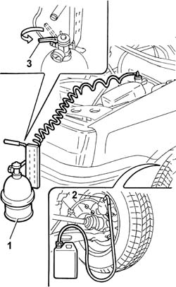

0010T65 hydraulic brake system bleed air
- Path
- Procedures > 00 MAINTENANCE > 0010 NEW UNITS AND PLANNED MAINTENANCE > 0010T VEHICLE OIL AND FLUIDS > 0010T65 hydraulic brake system bleed air
- Kind
- repair procedure (removal / refitting; the operation number is the code)
- Applies to
- all engines; all production periods
- Interactive page
- https://sloeber94.github.io/elrnDB-fPnd/en/#/2752385
Applies to: all engines; all production periods
Place the car on a ramp.
Check that the brake and clutch fluid is between the MIN and MAX marks.
1. Remove the brake fluid reservoir cap and connect the equipment to the reservoir.
 | Name | Country |
|---|---|---|
1 | Anti-pollution | 1.806.097.000 |
Remove the protective cap on the brake caliper bleed valve.
2. Connect the collection system (pipe and reservoir) to the bleed valve on the brake caliper.
Open the bleed valve.
3. Slowly open the fluid reservoir cock.
Wait until all the air contained in the hydraulic system has emerged.
Close the brake caliper bleed valve.
Repeat the above operations for the other brake caliper and the two rear drums.
Remove the vehicle from the lift.

Topics that link to this page (23)
- 3310A30 FRONT BRAKE CALIPER (one) - R.R.
- 3320B20 Rear brake shoe CYLINDER (one) left or right - Replace.
- 3330C10 (PUMP) - MASTER CYLINDER R.R.
- 3330C14 (PUMP) - MASTER CYLINDER .R.R for versions with A.B.S.
- 3330C30 brake fluid reservoir - r + r and wash inside
- 3330C66 braking compensator - r+r - includes adjustment
- 3330D02 brake servo/brake pump assembly - r r
- 3330D10 brake servo - r+r - includes separation from master cylinder (pump)
- 3330D14 brake servo - r+r for versions with abs - includes separation from master cylinder (pump)
- 3330E10 FLEXIBLE PIPE (one), left or right, to front brake calipers - R.R .
- 3330E34 Intermediate FLEXIBLE PIPE (one), left or right, to rear brakes - R.R.
- 3330E51 rigid pipe (one), lh or rh, from master cylinder to fitting - r r
- 3330E52 RIGID PIPE from master cylinder to LEFT front brake - R.R.
- 3330E53 RIGID PIPE from master cylinder to RIGHT front brake - R.R.
- 3330E63 RIGID PIPE (ONE) LEFT OR RIGHT from CONNECTOR to intermediate hose - R.R.
- 3330E69 RIGID PIPE (one), left or right, to the rear wheel cylinders - R.R.
- 3340A12 A'B.S. system. - electronic and hydraulic CONTROL UNIT R.R.
- 3340A13 abs central mount - r r
- 3340B52 pump/central obs pipe - r r
- 3340B55 central brake pipe to lh - r r
- 3340B56 RIGID PIPE from hydraulic CONTROL UNIT to RIGHT FRONT BRAKE - R.R.
- 3340B62 rear connection central pipe - r r
- 4420D20 rear suspension axle -replace- includes r+r, check, parts transfer and bleeding